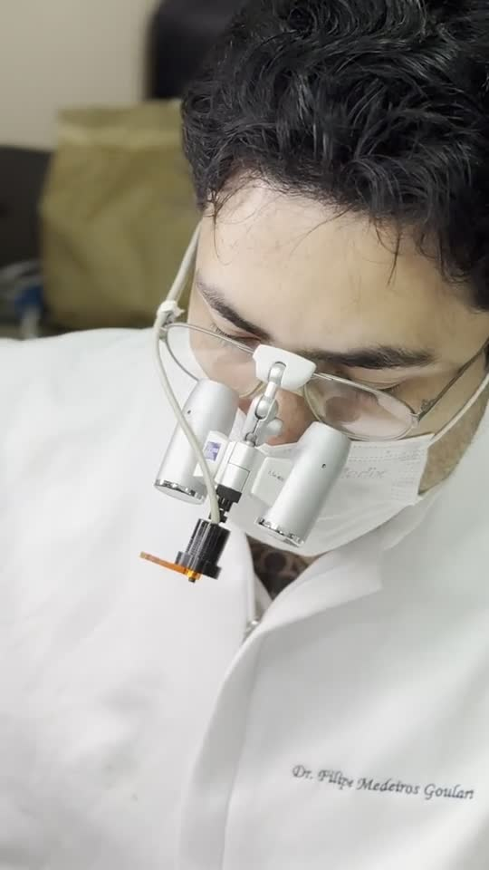
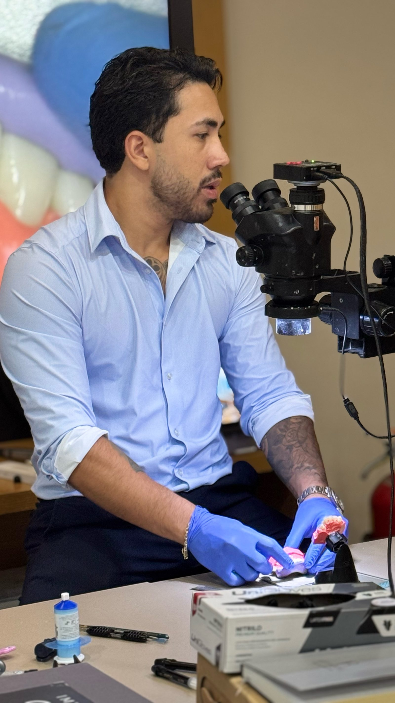
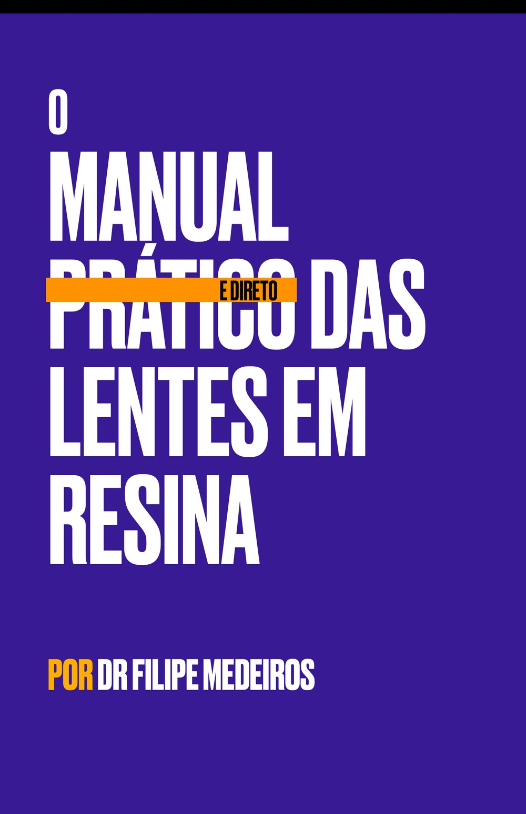
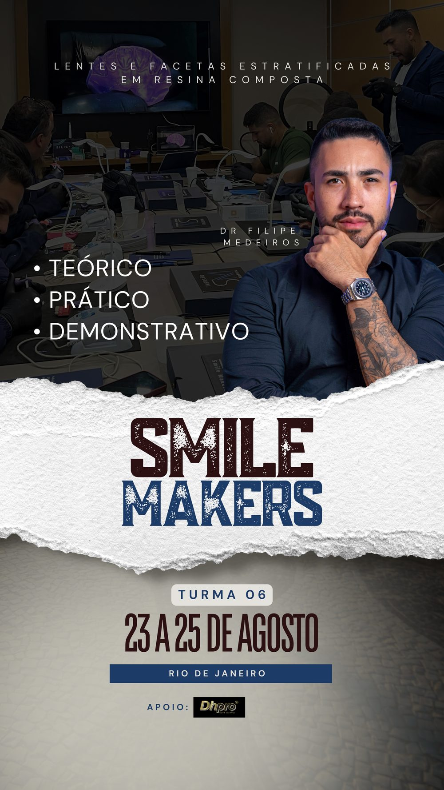
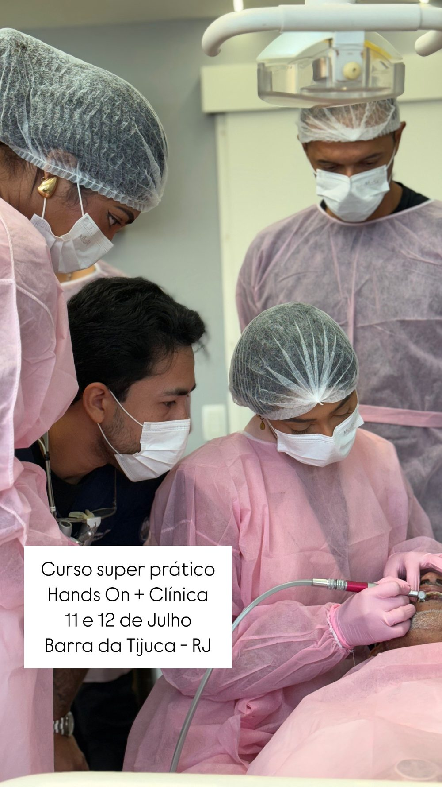
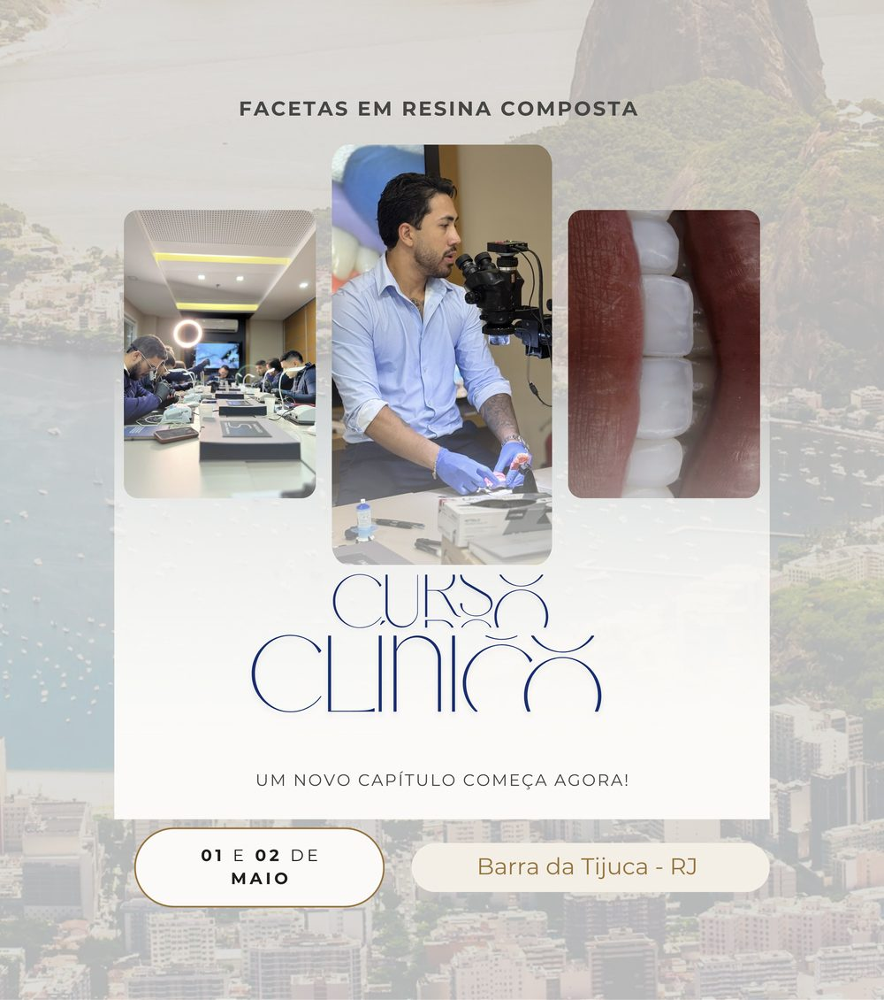
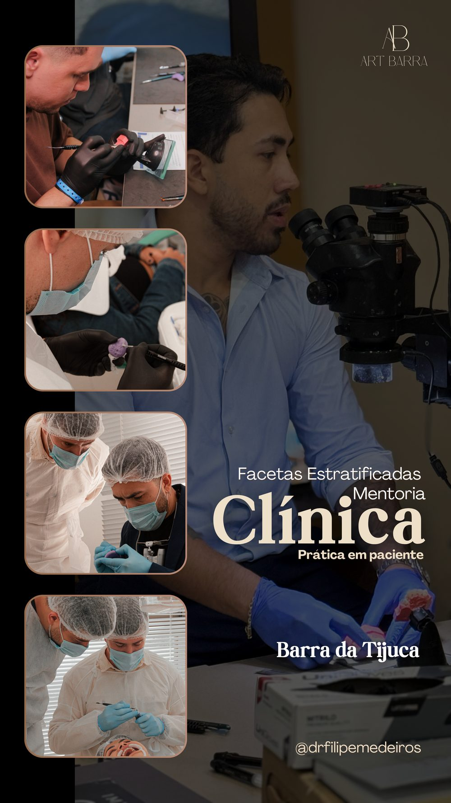
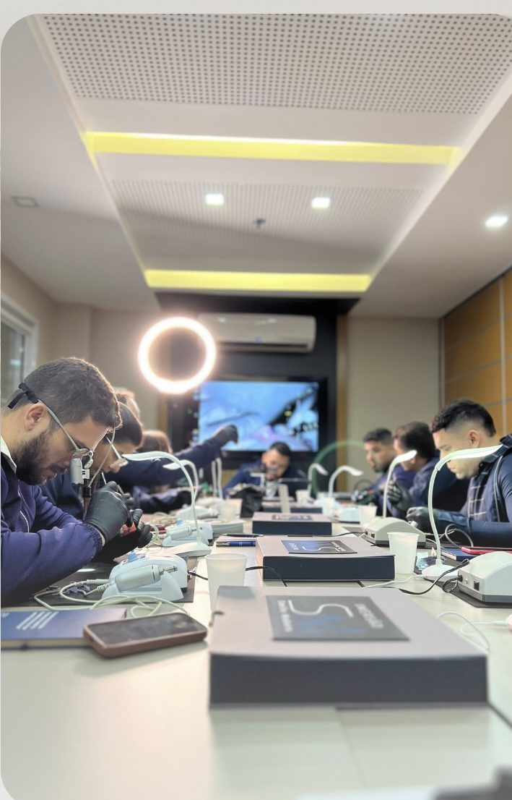

Lentes e Facetas Estratificadas em Resina Composta.
A mentoria Smile Makers, com o Dr. Filipe Medeiros: teoria, mão na massa em modelo e demonstração ao vivo em paciente — para você sair aplicando a técnica com segurança no seu consultório.
Turmas exclusivas

Quem conduz a mentoria
Um dentista que aprendeu fazendo — e ensina do mesmo jeito.
Dr. Filipe Medeiros Goulart é sócio da Art Barra Odonto, em Barra da Tijuca e Itaguaí (RJ), e se dedica à odontologia estética de alta performance. Muito além de dentes, ele constrói sorrisos com história — e é isso que ensina em cada turma da Smile Makers.
Cada mentoria é conduzida pessoalmente por ele, do planejamento à prática em paciente real, com acompanhamento próximo de cada aluno. Não é curso gravado: é mão na massa, ao seu lado.
- CRO-RJ 42835registro profissional ativo
- +2.000facetas em resina realizadas nos últimos 2 anos
- Palestrante internacionale pós-graduando em odontologia estética
- +62 milseguidores acompanhando o trabalho no Instagram
Formato da mentoria
Dois dias, do zero até a boca do paciente.
Nada de curso só teórico: aqui você entende o protocolo, treina a estratificação com as próprias mãos e acompanha de perto a aplicação da técnica em paciente real, guiado pelo Dr. Filipe Medeiros.
-
1
Teórico
Fundamentos da estratificação em resina composta: seleção de caso, protocolo de cores, materiais e o raciocínio por trás de um resultado previsível.
-
2
Prático
Mão na massa em modelo, com microscópio e a mesma técnica de estratificação usada na clínica — para você sair treinado, não só informado.
-
3
Demonstrativo
Acompanhamento de perto da aplicação em paciente real, do planejamento ao resultado final, tirando dúvidas em tempo real com o Dr. Filipe.
Turmas pequenas, com data combinada 1:1 pelo WhatsApp — assim cada aluno tem espaço de verdade para aprender.

Incluso na mentoria
Isso não é só um curso. É um mapa.
Todo aluno da Smile Makers recebe o Manual Prático e Direto das Lentes em Resina — o material que o próprio Dr. Filipe Medeiros usa para consultar protocolo, adesão e sequência clínica.
- Direto ao ponto: sem enrolação, para facilitar a sua jornada clínica.
- Passo a passo de adesão, seleção de resina e protocolo de cores.
- Seu ponto de partida — para consultar sempre que a dúvida aparecer.
Sem custo adicional para quem faz a mentoria.
Para quem é a Smile Makers
Feita para quem quer sair da teoria.
Quer treinar de verdade
Você já estudou estética, mas quer treinar o protocolo de estratificação com as próprias mãos, ao lado de quem faz isso na rotina.
Quer ampliar o consultório
Você quer oferecer lentes e facetas em resina composta com previsibilidade, sem depender só de laboratório de porcelana.
Quer segurança clínica
Você já fez cursos, mas nunca acompanhou de perto uma aplicação real em paciente, do planejamento até o resultado.
Prova de que funciona
Turmas Smile Makers já realizadas.
Sempre em Barra da Tijuca (RJ). Arraste para o lado.




Depoimentos e bastidores
Um pouco da Smile Makers.
Aluno da Smile Makers
Cirurgião-dentista, ao finalizar a mentoria
Depoimento gravado na Art Barra Odonto, logo após concluir a mentoria com o Dr. Filipe Medeiros.
Dr. Filipe Medeiros Goulart
Mentoria Smile Makers
Um pouco do dia a dia da mentoria — da bancada à cadeira clínica.

Vagas limitadas
Pronto para estratificar
com segurança?
Fale agora com a equipe do Dr. Filipe Medeiros pelo WhatsApp e combine sua data na próxima turma da Smile Makers.
Falar no WhatsAppFale com a gente
Vamos marcar sua vaga na Smile Makers?
Preencha os campos e o botão abre o WhatsApp com a mensagem já pronta — é só apertar enviar.